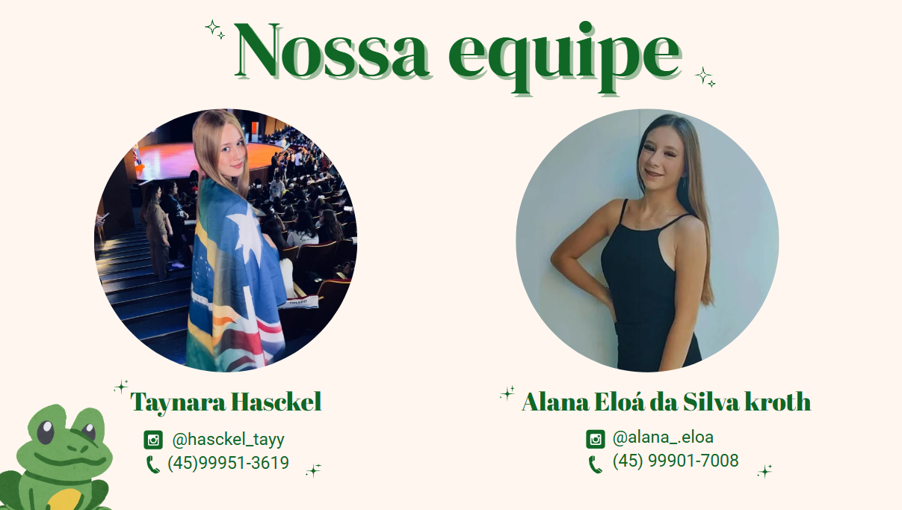

A equipe da Rota Rural Mercedes é formada por profissionais apaixonados por turismo, agricultura e cultura local. Trabalhamos para conectar o campo à cidade com informações úteis, acolhimento e experiências autênticas.
Entre em contato conosco e saiba como podemos ajudar na sua jornada pela Rota Rural.
Voltar